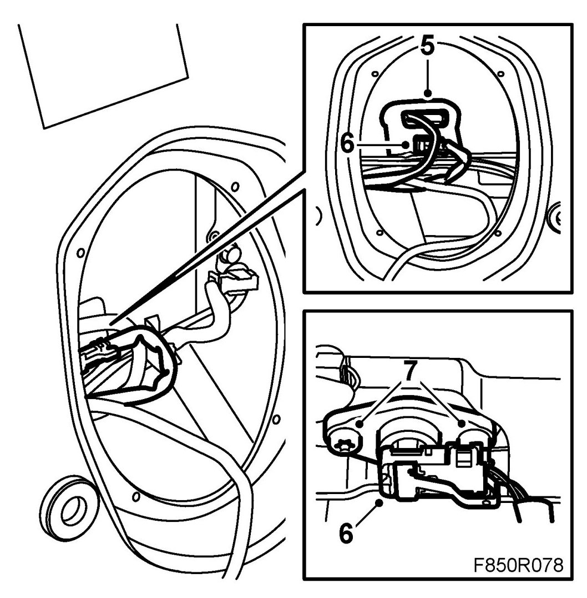
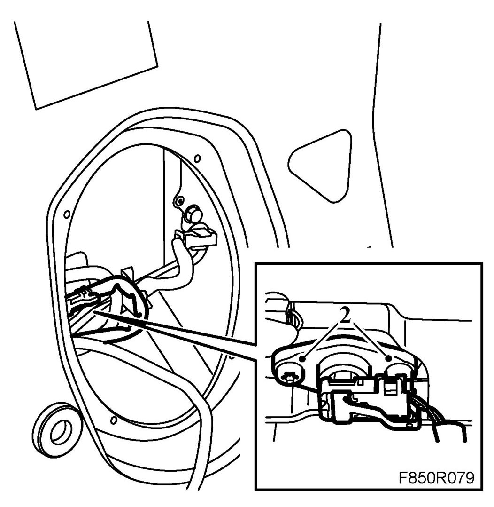
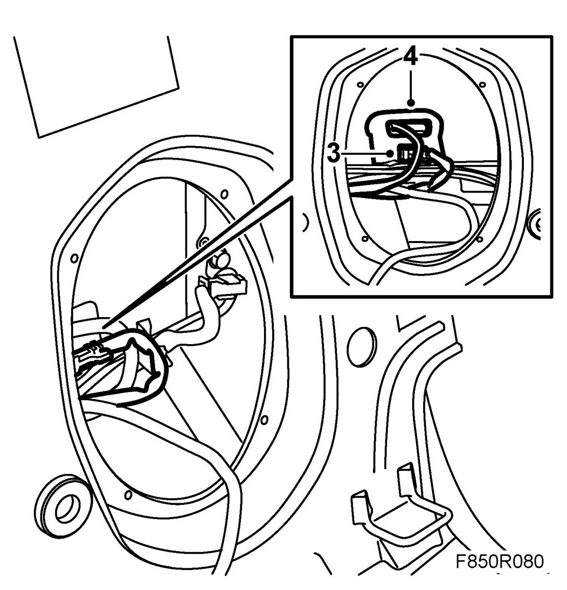
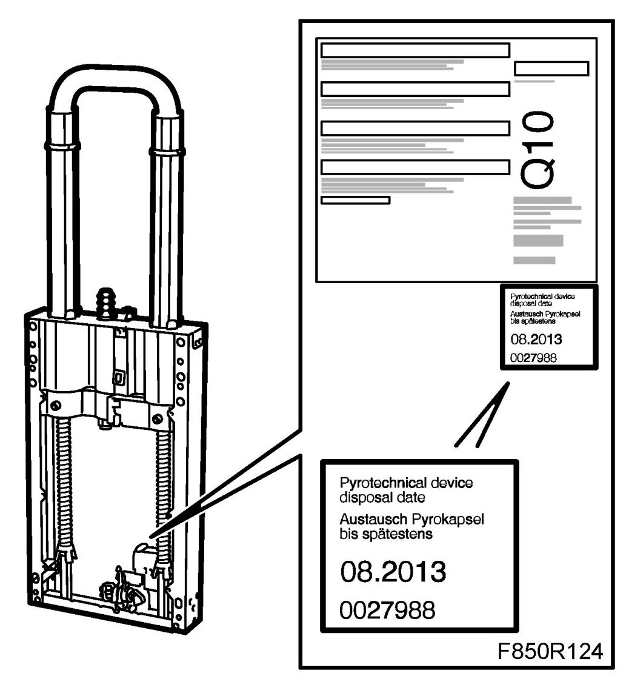

Roll Bar Triggering Solenoid: Service and Repair
Activation Unit, Roll Bar (734D, 734P)
WARNING:
- Read through Safety and handling instructions and Before removing a control module before starting work.
- The roll bar activation unit can only be replaced 9 times. When it has been replaced 9 times the complete roll bar must be replaced. To guarantee the correct number of activation unit replacements the following label must be fitted on the roll bar unit.
To remove
WARNING: The battery's ground cable must be removed before the positive cable. Wait for at least 1 minute after disconnecting the battery before beginning any work on the airbag system. Otherwise the airbag may be deployed unintentionally and this can cause fatal/severe personal injuries.
1. Turn the ignition key to the position LOCK.
2. Remove the rear seat cushion and backrest.
3. Remove the speaker or cover.
4. Check the number of labels on the roll bar unit. If 9 labels are fitted then the entire roll bar unit must be replaced, see Roll bar unit.
WARNING: The roll bar activation unit can only be replaced 9 times. When it has been replaced 9 times the complete roll bar must be replaced. To guarantee the correct number of activation unit replacements the following label must be fitted on the roll bar unit.
5. Carefully release the protective tape around the connector.

6. Remove the connector from the activation unit.
7. Remove the screws and flanges holding the activation unit.
8. Remove the activation unit from the roll bar unit.
To fit
1. Place the activation unit in the assembly position on the roll bar unit.
IMPORTANT: Ensure that the recess on the element fits the control lugs on the roll bar unit.
2. Fit the flange and screws.

3. Attach the connector to the activation unit.

4. Refit the protective tape.
5. Fit the enclosed labels on the back of the roll bar unit.

6. Fit the speaker or cover.
7. Fit rear seat cushion and backrest.
8. Connect the battery.
9. Turn ON the ignition and check the airbag system and control module using the diagnostic tool as follows:
Connect the diagnostics instrument to the diagnostics socket under the dashboard. Delete any trouble codes.
Switch off the ignition and then on again. Wait at least 1 minute with the ignition switched on.
Check whether a diagnostic trouble code is displayed:
If a diagnostic trouble code is displayed:
Carry out fault diagnosis according to the instructions under respective trouble codes.
If no diagnostic trouble code is displayed:
Fitting completed correctly. Disconnect the diagnostics instrument.
10. Carry out Measures after disconnecting the battery.